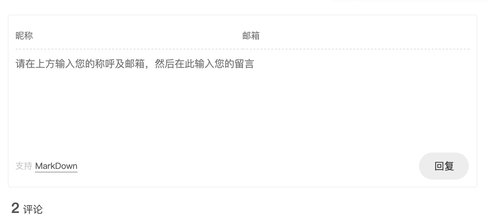
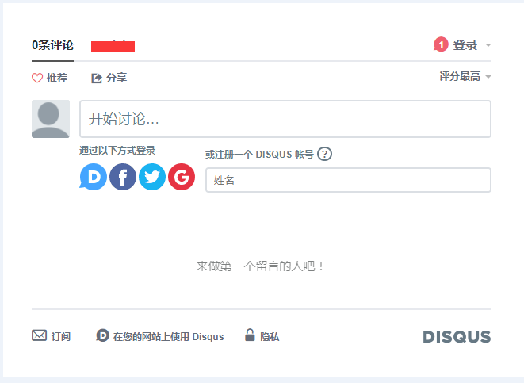
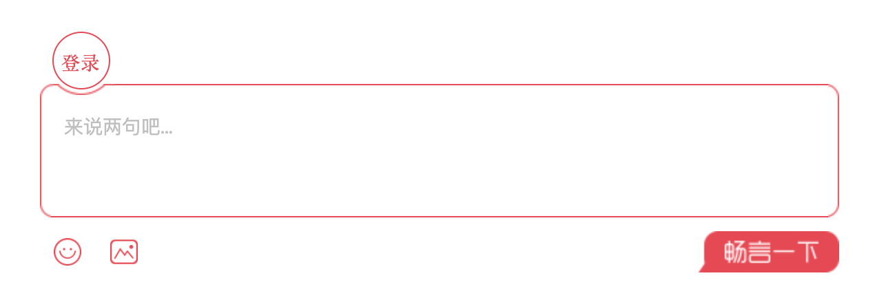
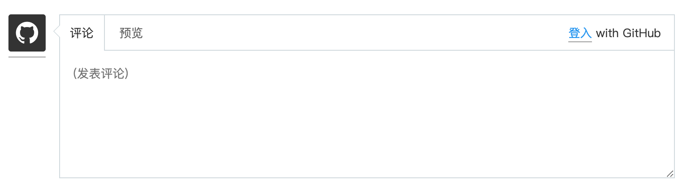
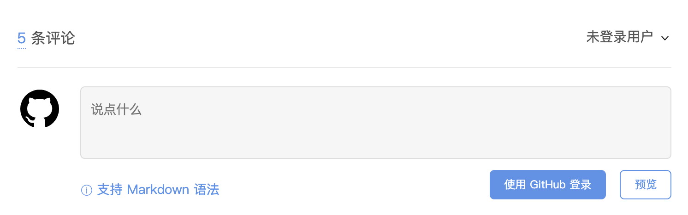
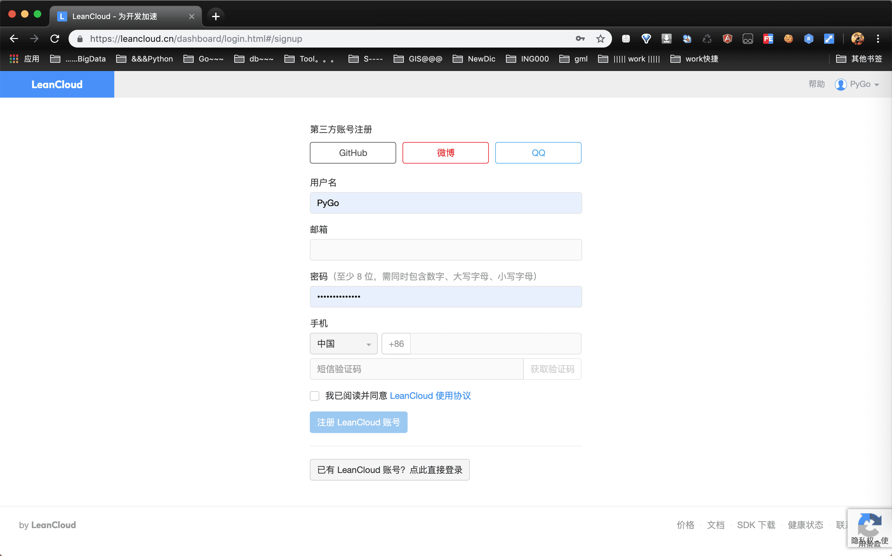
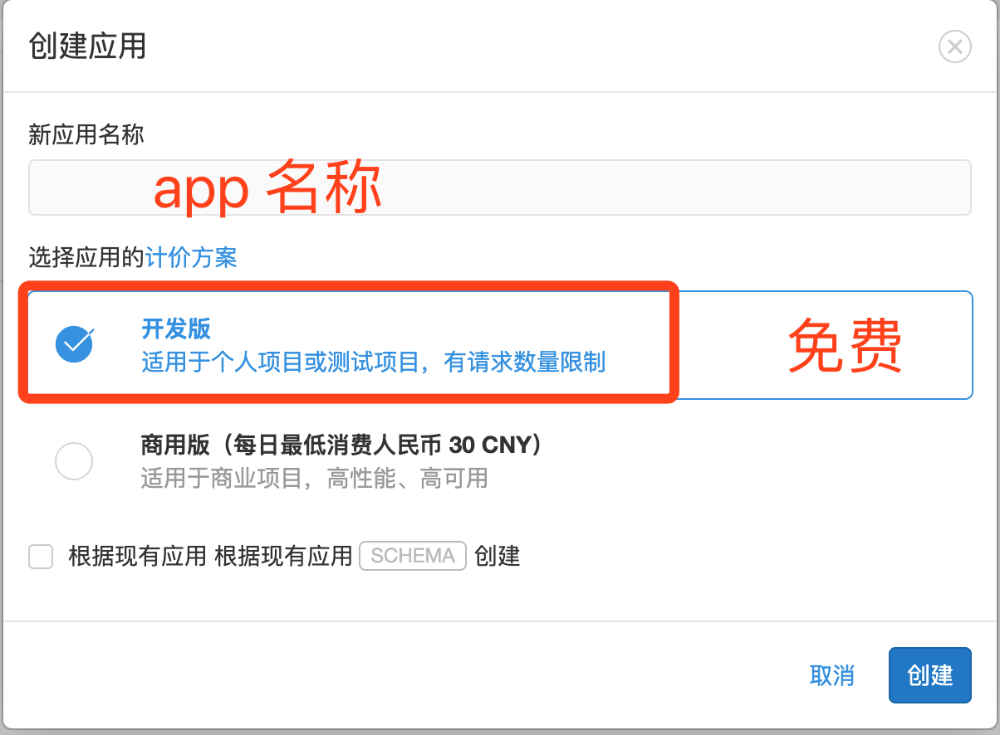
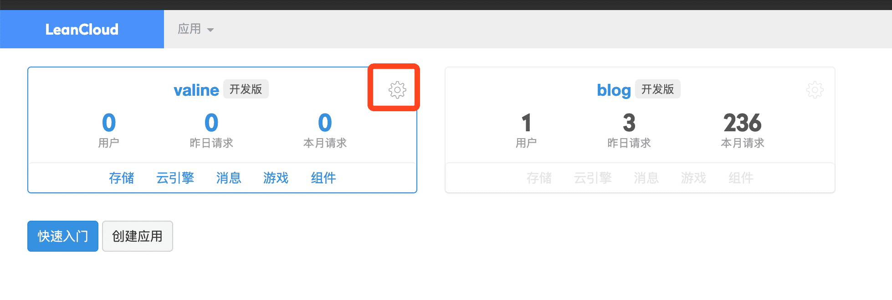
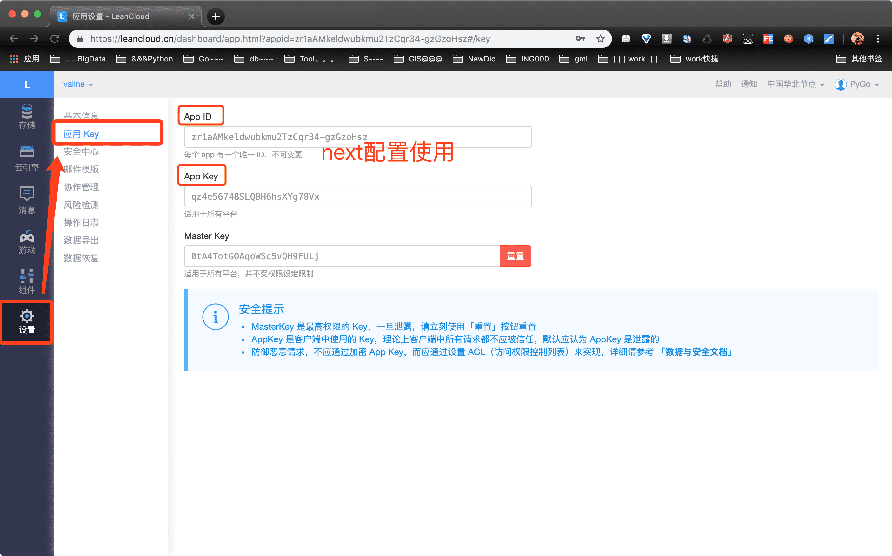

Hexo菜单栏添加留言板-Valine
1、简述
blog菜单栏添加留言板功能，欢迎大家留言交流。。。
My blog文章添加留言功能，除此之外还在菜单栏添加一个专门用来留言的message pad，用来share文章中简称mp。查看next主题config.yml文件以及google了一下，发现居然配置5中默认的评论系统。。。next这么变态吗？提供1～2就好了，5个是怎么回事啊，还得花时间去整理compare，以下仅代表个人观点。
2、评论系统
| id | type | desc | remark |
|---|---|---|---|
| 1 | valine | https://valine.js.org | 🌟🌟🌟 |
| 4 | disqus | https://www.jianshu.com/p/c4f65ebe23ad | |
| 5 | changyan | https://www.jianshu.com/p/5246d020da25 | |
| 2 | gitment | https://github.com/imsun/gitment | 🌟 |
| 3 | gitalk | https://gitalk.github.io | 🌟 |
2.1、效果图
 > disqus  > changyan  > gitment  > gitalk valine
总结：单从效果图上来看，我倾向于gitment、gitalk、changyan，简单整洁。
2.2、功能性
这里不想说明了，直接给出结论。。。干货
总结：除了valine，其他4个评论均需要强制登录一个指定的账号才可以进行评论发布，令人太不爽了。
3、Valine
主要基于账号的问题，我选择Valine，起码大家都可以参与，没有限制。
3.1、注册LeanCloud
注册LeanCloud，将数据托管给第三方，直接登录账号使用，很方便。注册地址：注册Leancloud(官方)
 > 创建应用  > 设置应用  > 应用key 注册
3.2、next配置
打开next的配置：theme/next/_config.yml，搜索：# Valine
1 | |
- enable：是否开启Valine评论
- appid：leancloud应用上App ID
- appkey：leancloud应用上App Key
- notify && verify：是否开启邮件提醒，leancloud && github valine使用有详细介绍，具体查看文档(https://valine.js.org/notify.html)
- placeholder：评论区默认文字
- avatar：头像设置(https://valine.js.org/avatar.html)
- guest_info：评论区用户选填的基本信息
- pageSize：一页评论的数据
- language：语言设置，默认zh-cn
- visitor：还不知道，欢迎大家留言告诉我，哈ヾﾉ≧∀≦)o哈
- comment_count：是否展示评论总数
4、评论生效
注册 && 配置搞完了之后，并不是立马看到效果，需要：
hexo g
hexo server -p 8888
从心打开blog，奇迹出现了。。。哈哈哈，一起都是自己的功劳，并不是什么奇迹，只要努力，成功离你就会不远。
5、禁用评论
但是，我其实就是想在菜单栏添加个留言板功能，不想再blog文章中添加这个功能，简单。打开文章，在最上面的设置中加入
comments: true
从新g->server，奇迹再次发生。。。如果想都关闭评论，这个需要在已经发布的文章中分别设置，暂时没有找到简单的方法。不能在以后每篇文章中每次都设置，好麻烦，只想需要要设置一次。当然有方法，blog/scaffolds/post.md文件设置：
1 | |
6、留言板
终于进入主题了，菜单栏添加单独一栏留言板功能。
添加page
hexo new page messagepad
留言板
对page messagepad的index.md进行编辑加入自定义的东西。
1 | |
继续见证奇迹吧。
7、Suggestion
真正的成功并非一朝一夕，水滴石穿，努力吧，少年们！！！
到此收工，一个完美的菜单栏留言板功能share献给大家。